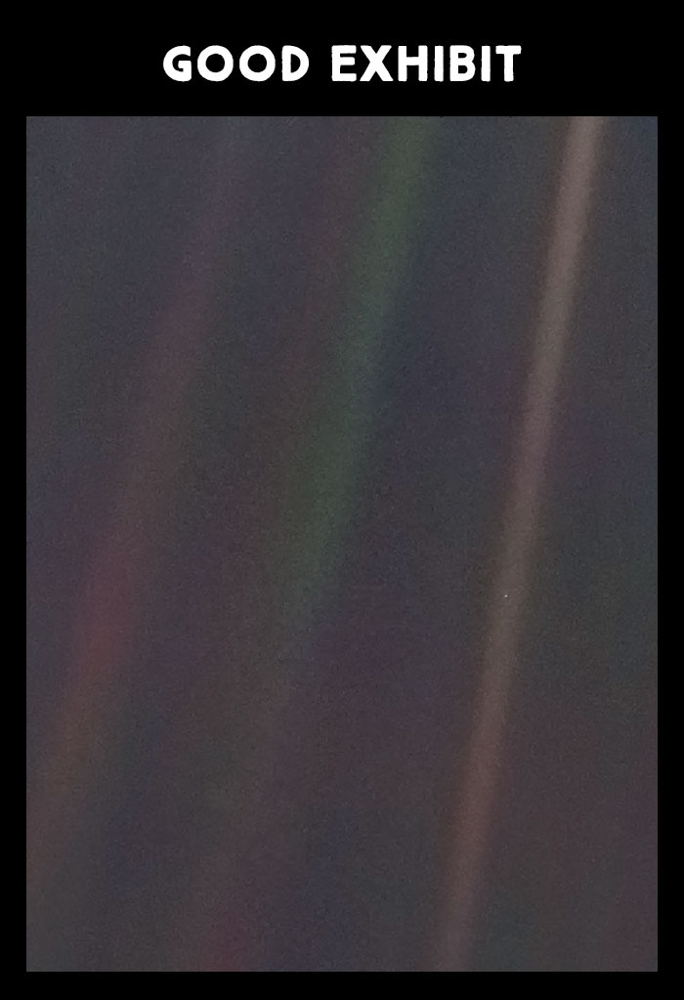

“There is perhaps no better demonstration of the folly of human conceits
than this distant image of our tiny world. To me, it underscores our
responsibility to deal more kindly with one another and to preserve and
cherish the
pale blue dot,
the only home we've ever known.”
— Carl Sagan on
the greatest selfie of all time.